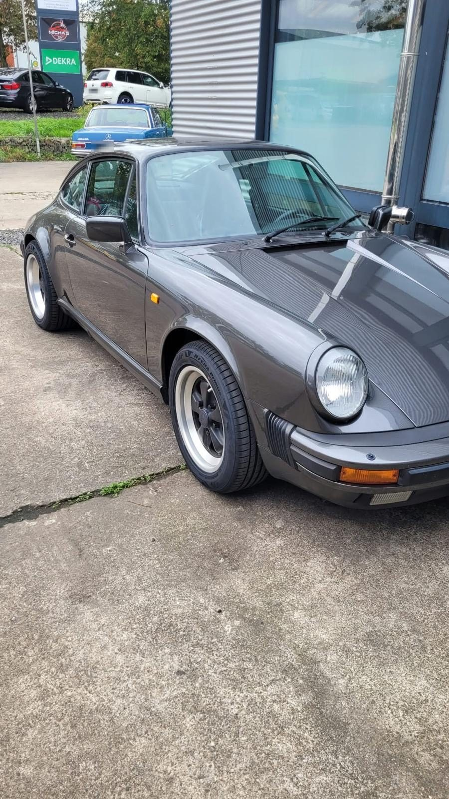

RAD
Reifenwechsel
Der Reifenwechsel ist bei uns die meistgefragte Leistung, vor allem im Frühjahr und Herbst. Fragen Sie früh an, dann bekommen Sie einen Termin zu Ihrer Wunschzeit.
- Räderwechsel Sommer / Winter
- Reifenmontage und Auswuchten
- Profil- und Luftdruckprüfung
- Sichtprüfung der Bremsen
- Reifendruck-Kontrollsystem (RDKS)
- Ganzjahresreifen-Beratung
Tipp: Faustregel „von O bis O“Winterreifen von Oktober bis Ostern. Wer im September oder März anfragt, wartet am kürzesten.
Termin für Reifenwechsel anfragen